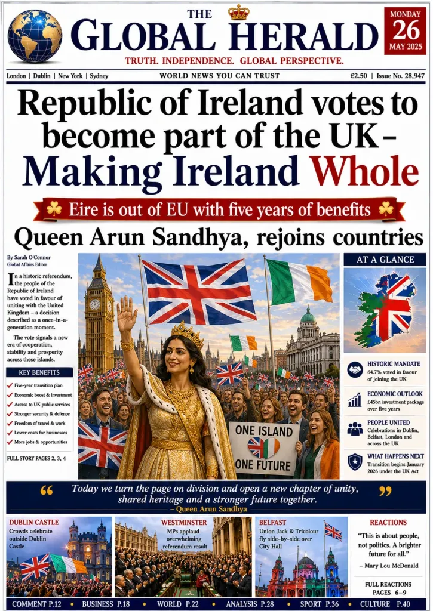
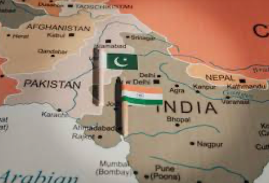
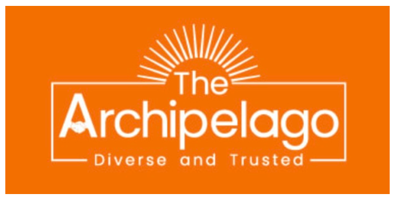
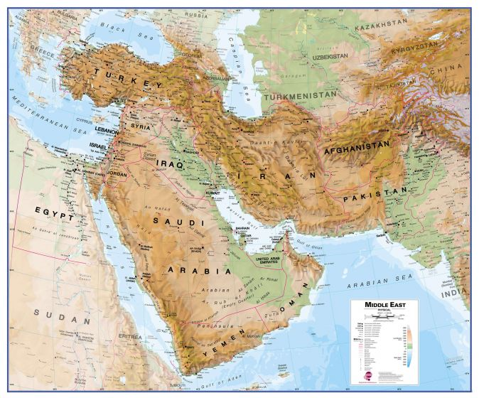

Donetsk Treaty v1.4
Memorandum of Understanding. Russia confirms it will not incur on any external territory(land, air, sea) and adopt a defensive posture only. Russia confirms the borders…
Read article →Memorandum of Understanding. Russia confirms it will not incur on any external territory(land, air, sea) and adopt a defensive posture only. Russia confirms the borders…
Read article →
I was asked to explain how I as Sovereign and Queen of United Kingdom and Ireland, saw Ireland and United Kingdom working together. Ireland is sovereignty of Aruna…
Read article →I wrote the Harmony Accord. Together with some very special people, we are making it happen. Nuclear disarmament. The timeline is set. We have until August 15 2026 for…
Read article →
Pakistan and India were in conflict about border incurrences. I helped convince the Prime Minister of India to adjust the access to the water sources in the area, and…
Read article →
The Archipelago is an international governing body established by Aruna Sandhya Koya. It consists of Archipelago Counsel, and Archipelago Community Ltd. The Archipelago
Read article →Read more about the Archipelago Climate Initiative that I established with a group of countries, including Russia, China, India and the US. The climate initiative aims…
Read article →
What is the faith capital used in Tarousha Santosh? There were issues in that Jerusalem was a location where three religions, had significant sites of heritage. There…
Read article →